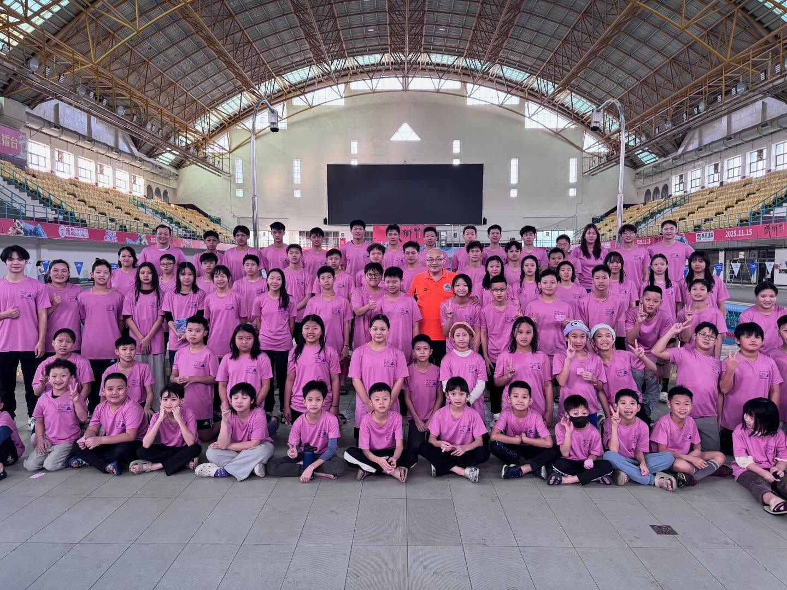
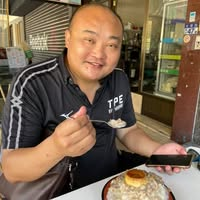
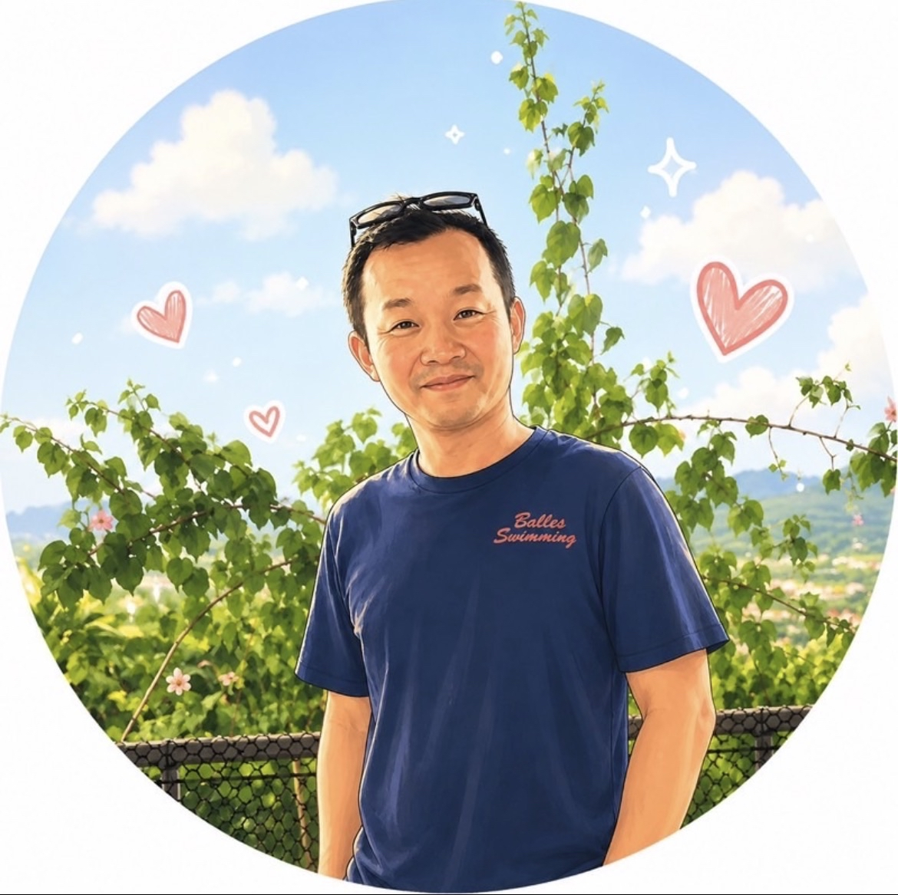
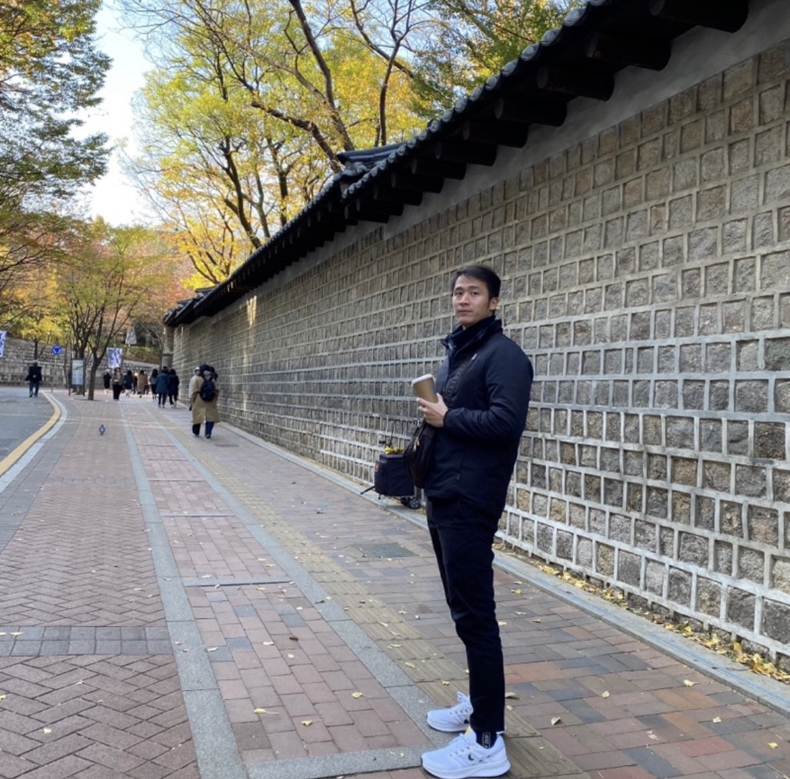
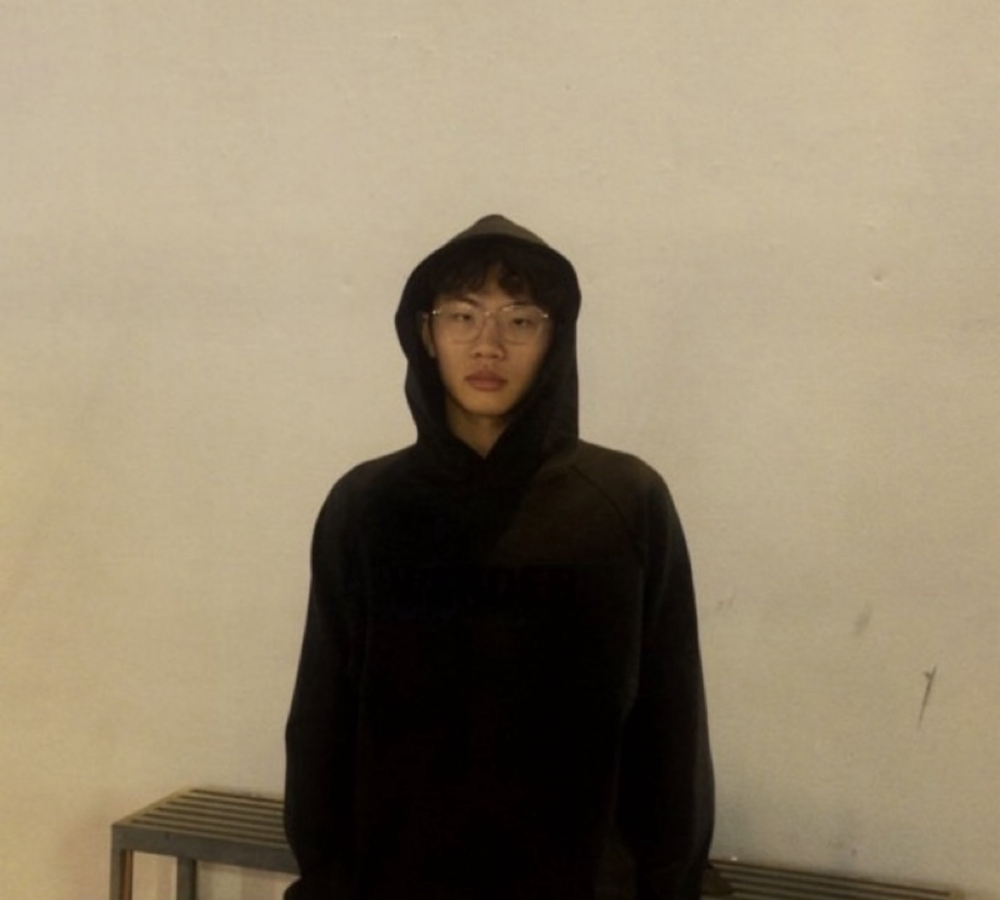
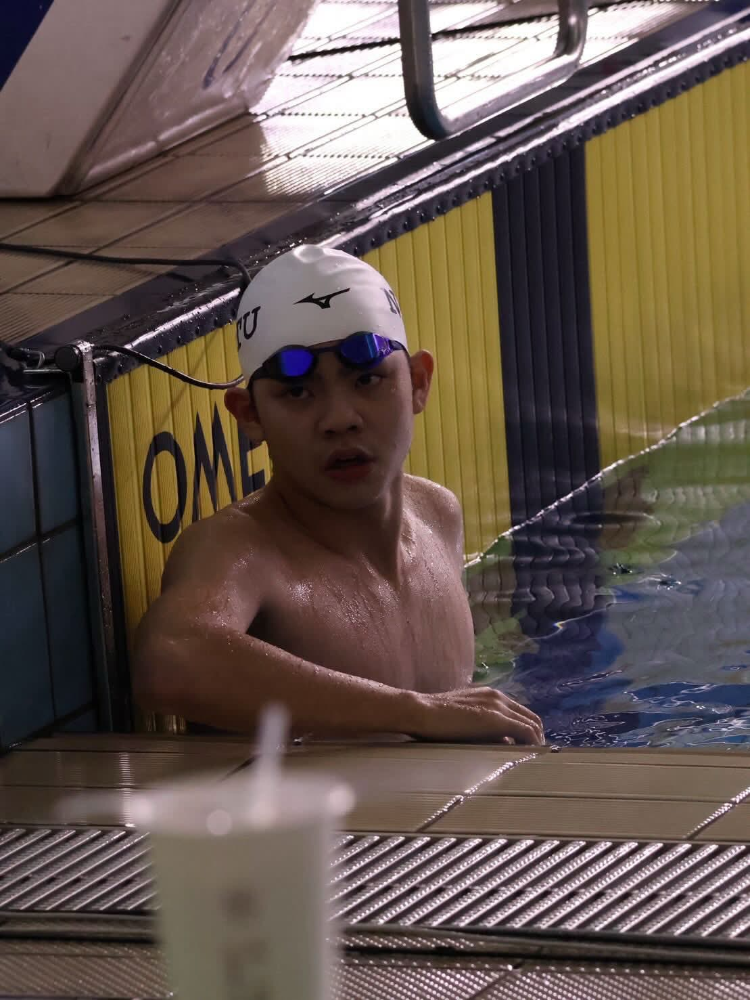

01 · 國小階段
高雄市中正國小
建立水感、泳姿基礎與規律訓練習慣，讓孩子在穩定環境中開始累積競技能力。
KAOHSIUNG SWIMMING
東美游泳隊（東美泳隊、TMSC）扎根高雄，陪伴兒童與青少年從游泳基礎、競技訓練到升學銜接；網站提供賽事榮譽與游泳成績查詢，讓選手與家長掌握每一次進步。

關於我們
東美游泳隊成立於 1998 年，紮根高雄在地，以「競技精進、快樂游泳」為核心理念。 無論是初學幼兒、學齡培訓，還是衝擊全國賽事的競技選手， 我們都以量身定制的課程與全心投入的教練，陪伴每位隊員寫下屬於自己的故事。
升學路線
東美不只訓練游泳，也協助孩子建立穩定的選手養成路線。從基礎培養、競技銜接到高中階段，讓訓練與升學方向更有規劃。
建立水感、泳姿基礎與規律訓練習慣，讓孩子在穩定環境中開始累積競技能力。
銜接更完整的訓練節奏，開始面對縣市賽、分齡賽與全國賽的競技挑戰。
整合課業、訓練與賽事規劃，陪伴選手朝全中運、全國賽與未來升學目標前進。
最新動態
⏳ 資料載入中…
教練團隊
每位教練都曾是選手，深知賽池裡的艱辛與榮耀，更懂得如何因材施教。





榮譽殿堂
每一面獎牌背後，都是教練與選手共同流下的汗水與淚水。
⏳ 資料載入中…
加入我們
歡迎填寫表單與教練聯絡詢問詳細內容!
留下基本資料後，教練團會依照年齡、程度與訓練目標安排試游與分組建議。
表單會在新分頁開啟，送出後教練團會再與您聯繫。